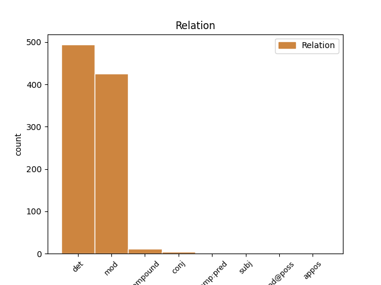
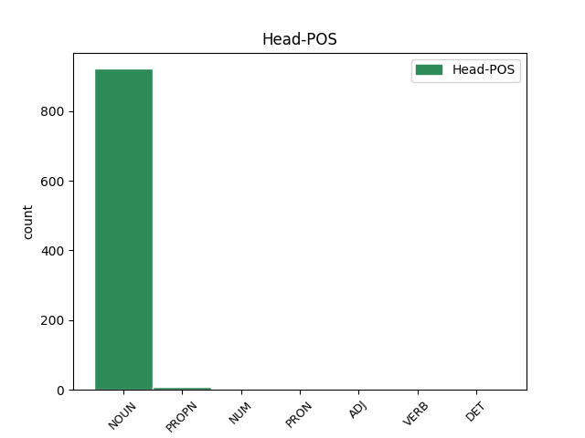
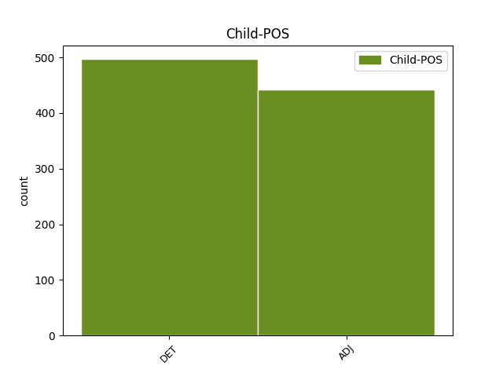

Distribution of features within this leaf



Agreement Rules sorted by frequency.
- When the dependent token is the determiner(det) of the head token, and the dependent token is DET.
1 Biken _ _ _ _ 0 _ _ _
2 n’eo _ _ _ _ 0 _ _ _
3 aet _ _ _ _ 0 _ _ _
4 an _ _ _ _ 0 _ _ _
5 traoù _ _ _ _ 0 _ _ _
6 war _ _ _ _ 0 _ _ _
7 raok _ _ _ _ 0 _ _ _
8 gant _ _ _ _ 0 _ _ _
9 un un DET _ Definite=Ind|Gender=Masc|Number=Sing|PronType=Art 10 det _ _
10 diorroadur diorroadur NOUN _ Case=NomAcc|Definite=Def|Gender=Masc|Number=Sing 0 _ _ _
11 peoc’hus _ _ _ _ 0 _ _ _
12 , _ _ _ _ 0 _ _ _
13 atav _ _ _ _ 0 _ _ _
14 ez _ _ _ _ 0 _ _ _
15 eo _ _ _ _ 0 _ _ _
16 bet _ _ _ _ 0 _ _ _
17 cheñchet _ _ _ _ 0 _ _ _
18 an _ _ _ _ 0 _ _ _
19 traoù _ _ _ _ 0 _ _ _
20 gant _ _ _ _ 0 _ _ _
21 dispac’hoù _ _ _ _ 0 _ _ _
22 trum _ _ _ _ 0 _ _ _
23 . _ _ _ _ 0 _ _ _
1 Dindan _ _ _ _ 0 _ _ _
2 e _ _ _ _ 0 _ _ _
3 furm _ _ _ _ 0 _ _ _
4 ordinal _ _ _ _ 0 _ _ _
5 é _ _ _ _ 0 _ _ _
6 an _ _ _ _ 0 _ _ _
7 drougsant _ _ _ _ 0 _ _ _
8 or _ _ _ _ 0 _ _ _
9 hleñved _ _ _ _ 0 _ _ _
10 - _ _ _ _ 0 _ _ _
11 spéred spéred NOUN _ Case=NomAcc|Gender=Masc|Number=Sing 0 _ _ _
12 hale _ _ _ _ 0 _ _ _
13 - _ _ _ _ 0 _ _ _
14 ouenn ouenn ADJ _ Case=NomAcc|Gender=Masc|Number=Sing 11 mod _ _
15 , _ _ _ _ 0 _ _ _
16 pe _ _ _ _ 0 _ _ _
17 ablam _ _ _ _ 0 _ _ _
18 da _ _ _ _ 0 _ _ _
19 labéiou _ _ _ _ 0 _ _ _
20 ban _ _ _ _ 0 _ _ _
21 empenn _ _ _ _ 0 _ _ _
22 . _ _ _ _ 0 _ _ _
1 Strollad _ _ _ _ 0 _ _ _
2 komunour _ _ _ _ 0 _ _ _
3 Sina _ _ _ _ 0 _ _ _
4 an _ _ _ _ 0 _ _ _
5 hini _ _ _ _ 0 _ _ _
6 eo _ _ _ _ 0 _ _ _
7 a _ _ _ _ 0 _ _ _
8 ren _ _ _ _ 0 _ _ _
9 gouarnamant _ _ _ _ 0 _ _ _
10 Republik republik NOUN _ Case=Gen|Gender=Masc|Number=Sing 0 _ _ _
11 Poblel poblel ADJ _ Case=Gen|Gender=Masc|Number=Sing 10 compound _ _
12 Sina _ _ _ _ 0 _ _ _
13 . _ _ _ _ 0 _ _ _
1 Evel _ _ _ _ 0 _ _ _
2 mestr mestr NOUN _ Gender=Masc|Number=Sing 0 _ _ _
3 doueoniour _ _ _ _ 0 _ _ _
4 e _ _ _ _ 0 _ _ _
5 roas roas ADJ _ Gender=Masc 2 conj _ _
6 kentelioù _ _ _ _ 0 _ _ _
7 e _ _ _ _ 0 _ _ _
8 Pariz _ _ _ _ 0 _ _ _
9 , _ _ _ _ 0 _ _ _
10 Roma _ _ _ _ 0 _ _ _
11 ha _ _ _ _ 0 _ _ _
12 Naplez _ _ _ _ 0 _ _ _
13 . _ _ _ _ 0 _ _ _
1 An _ _ _ _ 0 _ _ _
2 eil _ _ _ _ 0 _ _ _
3 brasañ bra ADJ _ Case=NomAcc|Definite=Def|Gender=Masc|Number=Sing 4 comp:pred _ _
4 eo is PRON _ Case=Abl|Gender=Masc|Number=Sing|Person=3|PronType=Prs 0 _ _ _
5 eus _ _ _ _ 0 _ _ _
6 ar _ _ _ _ 0 _ _ _
7 Stadoù _ _ _ _ 0 _ _ _
8 , _ _ _ _ 0 _ _ _
9 hag _ _ _ _ 0 _ _ _
10 an _ _ _ _ 0 _ _ _
11 hini _ _ _ _ 0 _ _ _
12 vrasañ _ _ _ _ 0 _ _ _
13 eus _ _ _ _ 0 _ _ _
14 an _ _ _ _ 0 _ _ _
15 48 _ _ _ _ 0 _ _ _
16 Stad _ _ _ _ 0 _ _ _
17 kenstag _ _ _ _ 0 _ _ _
18 . _ _ _ _ 0 _ _ _
1 Spittal _ _ _ _ 0 _ _ _
2 an _ _ _ _ 0 _ _ _
3 der d DET _ Case=Dat|Definite=Def|Gender=Fem|Number=Sing|PronType=Art 4 mod _ _
4 Drau Drau PROPN _ Case=Dat|Gender=Fem|Number=Sing 0 _ _ _
5 ( _ _ _ _ 0 _ _ _
6 sloveneg _ _ _ _ 0 _ _ _
7 : _ _ _ _ 0 _ _ _
8 Špital _ _ _ _ 0 _ _ _
9 ob _ _ _ _ 0 _ _ _
10 Dravi _ _ _ _ 0 _ _ _
11 ) _ _ _ _ 0 _ _ _
12 , _ _ _ _ 0 _ _ _
13 diazezet _ _ _ _ 0 _ _ _
14 war _ _ _ _ 0 _ _ _
15 ribl _ _ _ _ 0 _ _ _
16 an _ _ _ _ 0 _ _ _
17 Drava _ _ _ _ 0 _ _ _
18 er _ _ _ _ 0 _ _ _
19 bloavezh _ _ _ _ 0 _ _ _
20 1191 _ _ _ _ 0 _ _ _
21 war _ _ _ _ 0 _ _ _
22 urzh _ _ _ _ 0 _ _ _
23 kont _ _ _ _ 0 _ _ _
24 Otto _ _ _ _ 0 _ _ _
25 II _ _ _ _ 0 _ _ _
26 von _ _ _ _ 0 _ _ _
27 Ortenburg _ _ _ _ 0 _ _ _
28 , _ _ _ _ 0 _ _ _
29 a _ _ _ _ 0 _ _ _
30 zo _ _ _ _ 0 _ _ _
31 ur _ _ _ _ 0 _ _ _
32 gêr _ _ _ _ 0 _ _ _
33 e _ _ _ _ 0 _ _ _
34 Karintia _ _ _ _ 0 _ _ _
35 , _ _ _ _ 0 _ _ _
36 Aostria _ _ _ _ 0 _ _ _
37 . _ _ _ _ 0 _ _ _
1 Tost _ _ _ _ 0 _ _ _
2 en en DET _ Gender=Masc|Number=Sing|PronType=Art 3 subj _ _
3 arvar arvar NOUN _ Definite=Ind|Gender=Masc|Number=Sing 0 _ _ _
4 ( _ _ _ _ 0 _ _ _
5 NT _ _ _ _ 0 _ _ _
6 ) _ _ _ _ 0 _ _ _
Disagree Examples:
1 Rannadoù _ _ _ _ 0 _ _ _
2 a _ _ _ _ 0 _ _ _
3 zleer zleer NOUN _ Case=NomAcc|Form=Len|Gender=Fem|Number=Sing 0 _ _ _
4 muzulian muzulian ADJ _ Case=NomAcc|Gender=Masc|Number=Sing 3 mod _ _
5 a _ _ _ _ 0 _ _ _
6 - _ _ _ _ 0 _ _ _
7 raok _ _ _ _ 0 _ _ _
8 prientiñ _ _ _ _ 0 _ _ _
9 an _ _ _ _ 0 _ _ _
10 te _ _ _ _ 0 _ _ _
11 , _ _ _ _ 0 _ _ _
12 ar _ _ _ _ 0 _ _ _
13 pezh _ _ _ _ 0 _ _ _
14 a _ _ _ _ 0 _ _ _
15 aotre _ _ _ _ 0 _ _ _
16 ur _ _ _ _ 0 _ _ _
17 wevnded _ _ _ _ 0 _ _ _
18 vrasoc'h _ _ _ _ 0 _ _ _
19 met _ _ _ _ 0 _ _ _
20 a _ _ _ _ 0 _ _ _
21 laka _ _ _ _ 0 _ _ _
22 ar _ _ _ _ 0 _ _ _
23 fazioù _ _ _ _ 0 _ _ _
24 da _ _ _ _ 0 _ _ _
25 aesoc'h _ _ _ _ 0 _ _ _
26 ivez _ _ _ _ 0 _ _ _
27 . _ _ _ _ 0 _ _ _
1 Al _ _ _ _ 0 _ _ _
2 Leie _ _ _ _ 0 _ _ _
3 izeloc'h _ _ _ _ 0 _ _ _
4 eget egen DET _ Definite=Ind|Gender=Neut|Number=Sing|PronType=Prs 5 det _ _
5 pont pont NOUN _ Definite=Ind|Gender=Masc|Number=Sing 0 _ _ _
6 Comines _ _ _ _ 0 _ _ _
7 - _ _ _ _ 0 _ _ _
8 Warneton _ _ _ _ 0 _ _ _
9 ( _ _ _ _ 0 _ _ _
10 Belgia _ _ _ _ 0 _ _ _
11 ) _ _ _ _ 0 _ _ _
12 - _ _ _ _ 0 _ _ _
13 Comines _ _ _ _ 0 _ _ _
14 ( _ _ _ _ 0 _ _ _
15 Bro _ _ _ _ 0 _ _ _
16 - _ _ _ _ 0 _ _ _
17 C'hall _ _ _ _ 0 _ _ _
18 ) _ _ _ _ 0 _ _ _
1 O o DET _ Case=Acc,Nom|Gender=Fem|Number=Sing|PronType=Ind 2 det _ _
2 neizh neizh NOUN _ Case=NomAcc|Definite=Def|Gender=Masc|Number=Sing 0 _ _ _
3 a _ _ _ _ 0 _ _ _
4 savont _ _ _ _ 0 _ _ _
5 war _ _ _ _ 0 _ _ _
6 ar _ _ _ _ 0 _ _ _
7 reier _ _ _ _ 0 _ _ _
8 pe _ _ _ _ 0 _ _ _
9 war _ _ _ _ 0 _ _ _
10 an _ _ _ _ 0 _ _ _
11 douar _ _ _ _ 0 _ _ _
12 en _ _ _ _ 0 _ _ _
13 inizi _ _ _ _ 0 _ _ _
14 pe _ _ _ _ 0 _ _ _
15 en _ _ _ _ 0 _ _ _
16 tevennoù _ _ _ _ 0 _ _ _
17 . _ _ _ _ 0 _ _ _
1 Gwarantet _ _ _ _ 0 _ _ _
2 e _ _ _ _ 0 _ _ _
3 vez _ _ _ _ 0 _ _ _
4 dezho _ _ _ _ 0 _ _ _
5 ar _ _ _ _ 0 _ _ _
6 gwir gwir NOUN _ Case=NomAcc|Form=Len|Gender=Fem|Number=Sing 0 _ _ _
7 hêrezh hêrezh ADJ _ Case=NomAcc|Gender=Masc|Number=Sing 6 compound _ _
8 war _ _ _ _ 0 _ _ _
9 an _ _ _ _ 0 _ _ _
10 douaroù _ _ _ _ 0 _ _ _
11 . _ _ _ _ 0 _ _ _
1 14 _ _ _ _ 0 _ _ _
2 . _ _ _ _ 0 _ _ _
3 Nepaleg _ _ _ _ 0 _ _ _
4 ( _ _ _ _ 0 _ _ _
5 nepali _ _ _ _ 0 _ _ _
6 pe _ _ _ _ 0 _ _ _
7 khaskura _ _ _ _ 0 _ _ _
8 ) _ _ _ _ 0 _ _ _
9 ( _ _ _ _ 0 _ _ _
10 yezh yezh NOUN _ Gender=Masc|Number=Sing 0 _ _ _
11 ofisiel ofisiel ADJ _ Definite=Ind|Degree=Pos|Gender=Neut|Number=Sing 10 mod _ _
12 e _ _ _ _ 0 _ _ _
13 Sikkim _ _ _ _ 0 _ _ _
14 ) _ _ _ _ 0 _ _ _